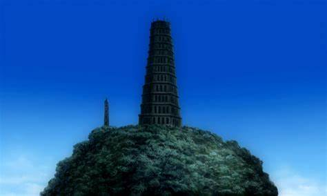

The Black Order (黒の教団, Kuro no Kyōdan) is a religious organization that works to defeat the Earl of Millennium and his army of Akuma. And the Black Order had a Former Headquarters that is located in Europe.

Back to the home page